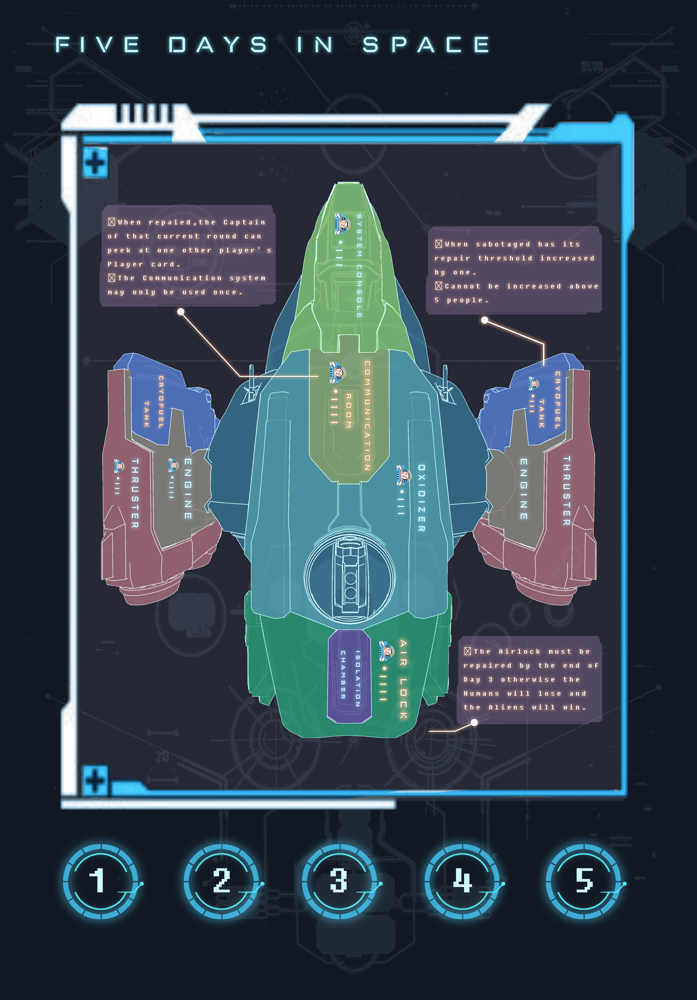

Description
Five Days in Space puts the players in the roles of astronauts on their way back to Earth from a distant planet. During the voyage back, they're awaken from cryosleep to learn that their ship was been tampered with and that two crew members were unknowingly infected by alien parasites! Now, the players have five days (rounds) to discover which two crew members are the aliens in their midst. Meanwhile, the aliens prevent the uninfected crew members from repairing ship systems in an attempt to kill everyone on board.
Details
Role: Designer
Contributions
Brainstormed and designed multiple gameplay mechanics including sabotage mechanics and turn system
Organized multiple playtests and iterated on design
Gathered materials to produce a physical board game for final design
The Process
Five Days in Space was created over a 1-month period in November 2019 with four other peers for a Foundations
of Game Design final project. We started by brainstorming different types of games we would want to make until we
decided on a social deduction game with a spacial theme. From there we designed mechanics and iterated on player
feedback until we had a final product we thought was well-balanced between the two teams and fun to play.



Rules PDF